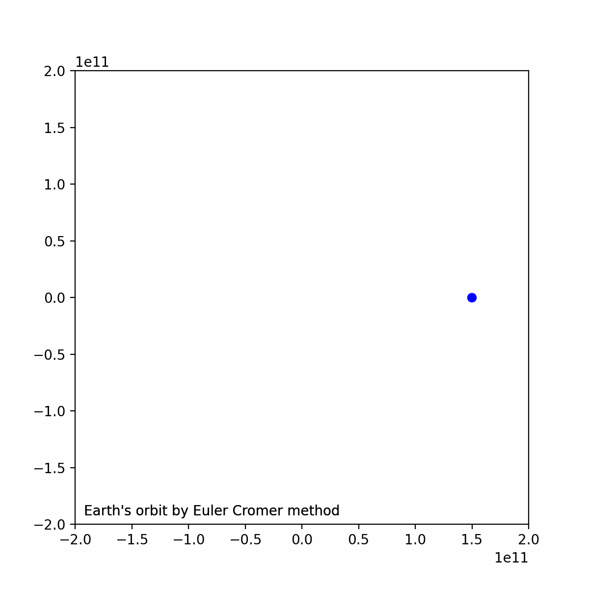
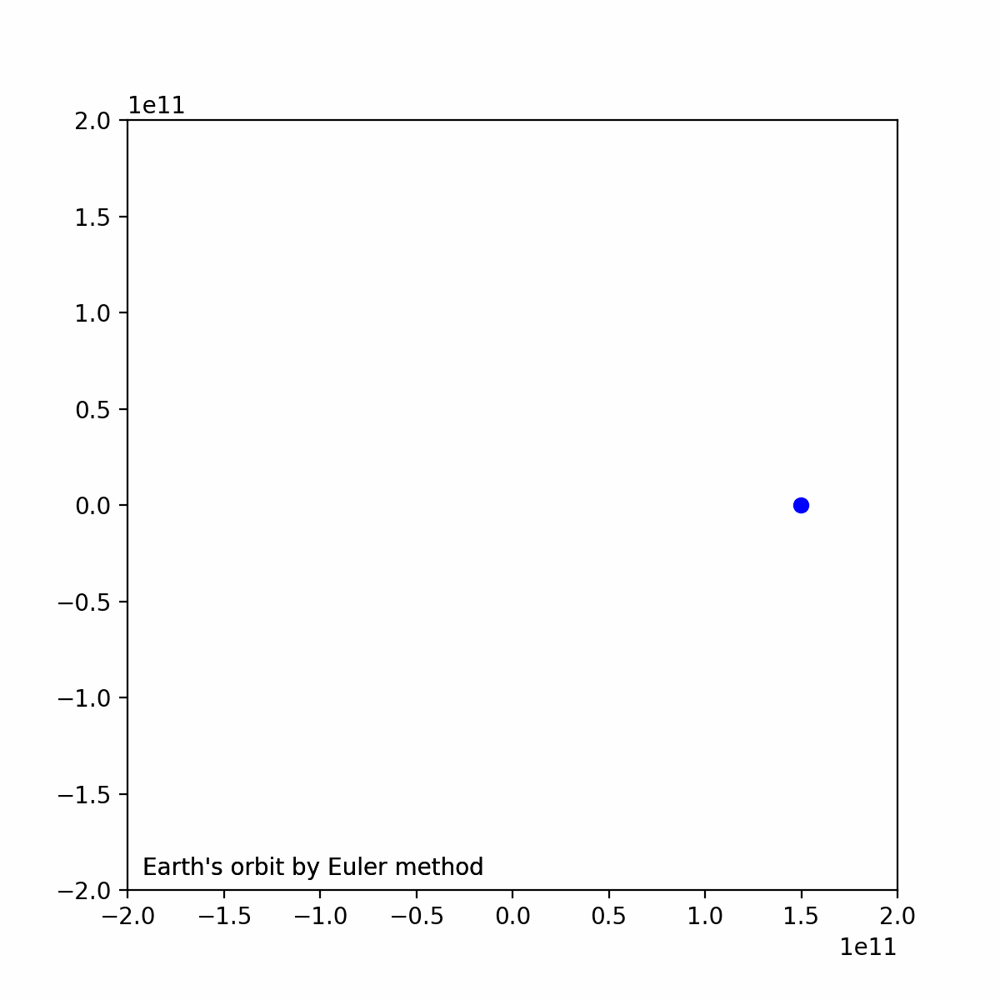
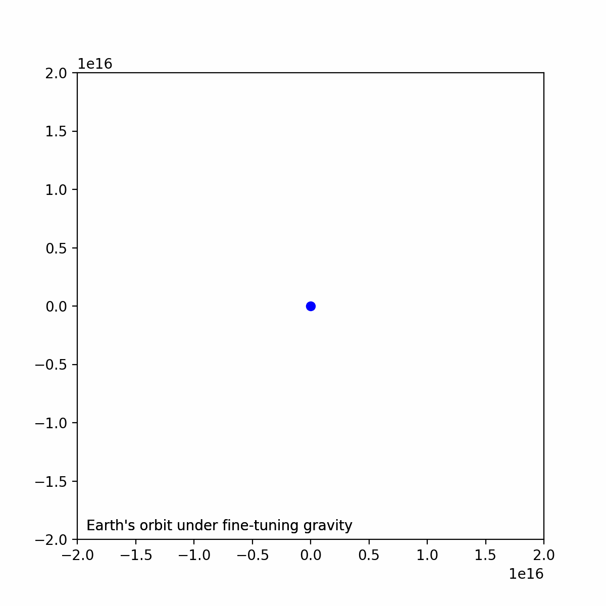
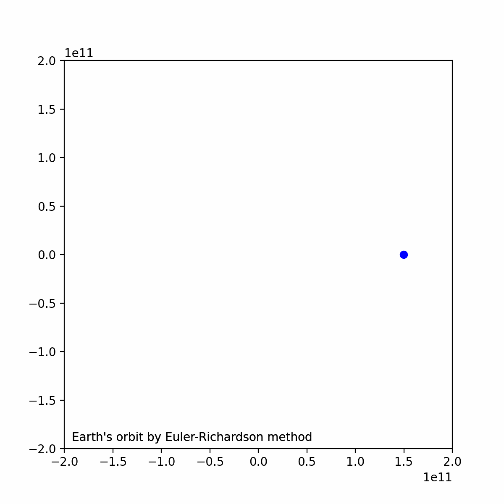
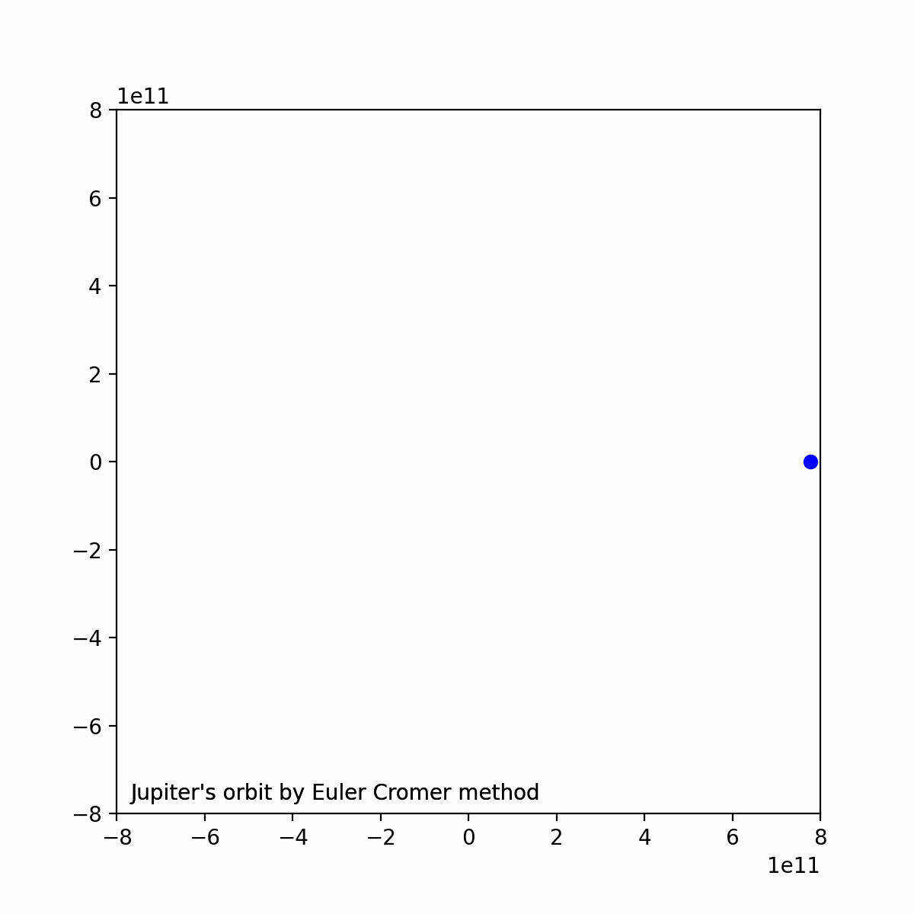

建议将仓库克隆到本地，使用支持Markdown语法的编辑器查看，在如果没有编辑器可查看report.html。仓库地址：Github
地球绕太阳公转速度为2.978×104m/s。总时间t=365.243×86400s（一年），时间步Δt=100s。使用Euler−Cromer法进行模拟结果如下：

使用Euler法进行模拟结果如下：

在该时间步的设定下，2种方法没有显著区别
行星在t=0时位置为(1,0)，速度为(0,5)。这意味着行星在距太阳r0=1AU，速度为5倍公转速度，且引力略微减小。在这种设定下，轨道不会重叠，行星会飞离太阳，证明如下：
对于正常速度正常引力的地球，r2GMmEk=21mv2此时的引力势能Ep对于该5倍速度，引力减小的地球，动能由于引力减小，实际的势能绝对值更小，=mrv2=2rGMm=−rGMm=−2Ek=21m(5v)2>−Ep这意味着动能大于势能阱，会飞离
使用Euler−Cromer模拟结果如下图：

r3GMmv′=rGM因此取vy=mrv′2=rv，其中r是日地距离=r1≈2.5855×10−6m/s
在总时间t=1014s下，若设时间步Δt为107s，仍可保持数圈内的圆周轨道，但当Δt=108s时，则无法保持。Δt=107s设定下的轨道图：

使用Euler−Richardson方法进行1.1问题的求解，轨道图如下：

分别计算地球和木星近地点和远地点的值，结果如下：地球远地点1.4960×1011m，近地点1.4958×1011，L2_Error=0.012504%木星远地点7.7821×1011m，近地点7.7800×1011，L2_Error=0.026784%二者的轨道可近似认为是圆，即偏心率接近0的椭圆木星的轨道用Euler−Cromer法模拟如下：

分别计算地球和木星在每相邻两个时间步的位置与原点组成的三角形的面积，并求平均值和误差：每步地球平均面积2.2275×1017m2,L2_Error=2.3535×10−10%每步木星平均面积5.0803×1017m2,L2_Error=2.7387×10−9%可以看出每步的面积是很接近的，由于设定的时间步Δt是均匀的，这验证了Kelper第二定律：行星和恒星的连线在相等的时间间隔内扫过相等的面积。
计算地球和木星轨迹的半长轴和周期，结果如下：地球：a3/T2=3.3614×1018m2/s3地球：a3/T2=3.3623×1018m2/s3二者的相对误差为2.4660×10−2%
本报告中所有试验结果可通过运行main.py，并修改调用函数进行复现